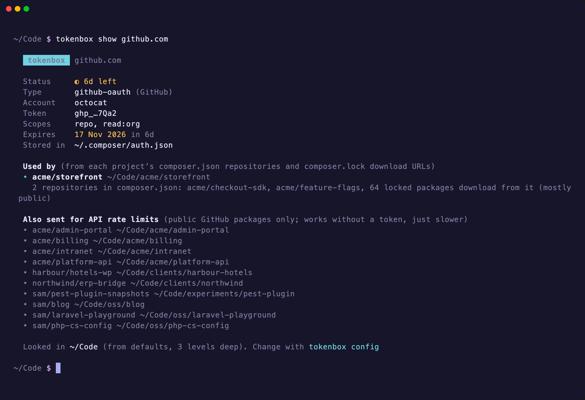

Who uses this token, and why?
tokenbox show github.com
Before you revoke or rotate a token, see every project that depends on it: which repositories in composer.json, how many locked packages, and which projects only send it to lift GitHub’s API rate limits.
Projects that override it with their own auth.json are listed too.

